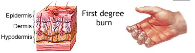
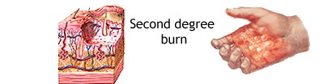

Don’t Hurt Yourself: Sunbathing Strategies
10/11/24 by Liona
My Experience
When I went to Myrtle Beach in South Carolina, I remember getting such a bad sunburn because I didn’t put on enough sunscreen. My face was the worst; it had blisters on it, and it was hard to sleep or have anything touch my face in general.
I had to stay in the hotel room for a whole day because I couldn’t be out in the sun or it would get worse, so I wasted a day of activities just locked inside. I wish I had put on enough sunscreen so I could enjoy the beach with my family, but alas, things don’t always go according to plan. That’s why you should invest in good sunscreen and also have someone remind you when to put it on—though that’s your responsibility!
Why is this interesting?
Most people experience at least one sunburn in their lives—unless they’ve been living under a rock! More people can relate to this than to something like a trip to Antarctica. Everyone has stories to share about how bad or annoying sunburns can be. Feel free to comment on your own experiences with sunburn!
Specific Weather Conditions You Should Know About
- You can check the UV index.
- It goes 0-11+ the higher number the more likely you’ll get burned.
- If it's 10 or higher it might just be better to stay inside till it cools down.
SPF Info
SPF, or Sun Protection Factor, measures how well a sunscreen protects your skin from UVB rays, which can cause sunburn and contribute to skin cancer. An SPF rating indicates the time it would take for your skin to redden with the sunscreen applied compared to without it. For example, if you typically burn after 10 minutes in the sun, an SPF 30 sunscreen would theoretically allow you to stay in the sun 30 times longer—about 300 minutes—without burning. However, it's important to remember that no sunscreen offers 100% protection, so reapplying every two hours, especially after swimming or sweating, is crucial for effective sun safety. Choosing a broad-spectrum sunscreen that protects against both UVA and UVB rays is also essential for comprehensive skin protection.
Here are some ways to prevent this outcome
- Number 1 way is to not go in the sun at all, just stay at home!
- Whenever the UV Index is high you should seek some shade to hide away from the heat.
- Apply a good amount of sunscreen when going outside even if it’s only for 2 hours or so.
Different kinds of sunburns
|  |  | |
| It starts getting a bit red and you should put some aloe vera on it. | Take a day to recuperate to not make it worse in the sun. | Dang your burnt, burnt. |
| Don't be too cautious, it'll go away in a day or two. | Make sure not to pop anything; it might just make things worse. | ADVISED TO SEE A DOCTOR! |
Remedies To Use
- Witch-hazel
- Aloe Vera
- Hydrocortisone cream
- Coconut Oil
- A Cold Shower
- Burn Relief Spray
- Antibiotic Ointment